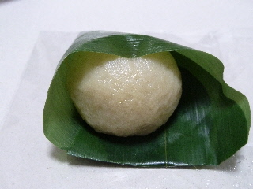
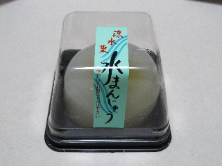
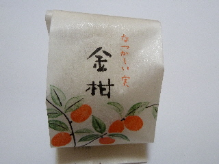
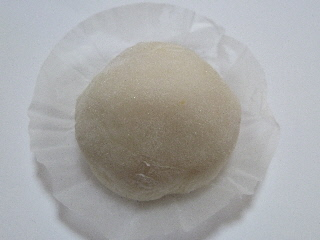
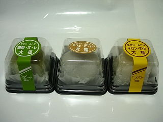

だんご茶屋萌音の麩まんじゅう
2011/08/01
だんご屋さんですが、和菓子も色々ありますね。
これは麩まんじゅうです。

お麩の味がちゃんとありました。塩味が効いてたので、よけいにそう思ったかもしれません。
甘いだけじゃなくて、素材の味がするのっていいですね。

これは水まんじゅうです。
水っぽくてプルプルとした水まんじゅうの中には、甘ーい抹茶あんがはいっていました。
夏菓子らしい商品ですね。
2011/08/01
だんご屋さんですが、和菓子も色々ありますね。
これは麩まんじゅうです。

お麩の味がちゃんとありました。塩味が効いてたので、よけいにそう思ったかもしれません。
甘いだけじゃなくて、素材の味がするのっていいですね。

これは水まんじゅうです。
水っぽくてプルプルとした水まんじゅうの中には、甘ーい抹茶あんがはいっていました。
夏菓子らしい商品ですね。
2011/02/11
期間限定で販売していたきんかん大福です。

いちご大福のように、大福の中に金柑が一つ入っていました。

金柑大福って美味しいんですね。私はここの苺大福よりもこっちの方が好きだなって思いました。
しかっりとしたお餅味の大福と、金柑の甘さが良く合っていて良かったです。
2008/11/8
今日、フジキ出雲店のもんだわ祭りに行ったら販売してました。
和菓子のケースに入ってていいですね。生クリーム大福って柔らかいので、こうなってると安心して持って帰れます。

クリームが固めなので、噛んでもグニャっとならないで食べやすかったです。クリームよりも餡の味がしっかりしていたので、大福らしい商品だなと思いました。生クリーム味が強いタイプもいいですけど、こうゆうのもなかなかいいですね。
個人的には抹茶味のつぶ餡子が、大福らしい味がして好きでした。
近くの観光地
松江城